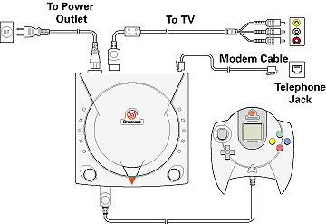

Back to Dream Key Help
3. Connecting the Dreamcast to a telephone line
Plug one end of the supplied white modem cable into the Sega Dreamcast modem
and connect the other end to the supplied telephone adapter. This adapter
plugs into your telephone line socket. Even if you don't connect a Sega
Dreamcast keyboard or memory card (Visual Memory Unit, sold separately),
you can still use Dream Key.

Back to Dream Key Help